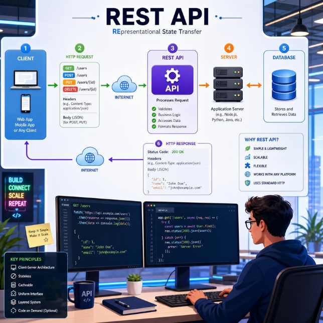

LKM · Pemrograman Web · Fase FRekayasa Perangkat Lunak
Merancang Basis Data & Kontrak API sebagai Jembatan Menuju Backend
Sumber bacaan interaktif untuk melatih cara berpikir system architect: memetakan data React ke entitas basis data, menormalisasi tabel, merancang kontrak REST API, dan memahami dasar keamanan autentikasi — sebelum satu baris kode backend pun ditulis.
Setiap bagian bacaan ini disusun mengikuti tiga prinsip Deep Learning — klik tiap kartu untuk membaca penerapannya.
LEMBAR 01
Analisis Kebutuhan Data & Entity Relationship Diagram
Sebelum menulis kode backend, seorang system architect merancang cetak biru data terlebih dahulu.[1] Data statis yang selama ini hidup sebagai array JavaScript di halaman Projects.jsx harus dipetakan menjadi entitas — tabel — di dalam basis data.
1:1 — satu baris berpasangan dengan tepat satu baris lain.
1:N — satu users memiliki banyak projects.
N:M — banyak-ke-banyak, biasanya lewat tabel penghubung.
Klik sebuah tabel untuk melihat detail atribut dan relasinya.
{{ erdSelected }} — {{ erdNotes[erdSelected] }}
▶ ILUSTRASI VIDEO — Cara membaca & menggambar ERD
Studi Kasus — Pemetaan Data Portofolio-React
Berikut hasil telaah tim Portofolio-React menelusuri tiap halaman front-end dan menerjemahkan datanya menjadi kebutuhan tabel:
Bagian Proyek React
Data Saat Ini
Kebutuhan Basis Data
{{ r.part }}
{{ r.now }}
{{ r.need }}
Sumber acuan pemodelan: E. F. Codd (1970) merumuskan model relasional yang menjadi dasar berpikir "data disimpan dalam tabel yang saling berelasi, bukan satu array besar".[1]
LEMBAR 02
Normalisasi Basis Data (1NF – 3NF)
Normalisasi menata struktur tabel agar tidak terjadi duplikasi atau anomali data, merujuk pada teori relational model yang dikemukakan E. F. Codd pada 1970.[1]
{{ t.label }}
Tabel projects sebelum dinormalisasi — kolom tech menyimpan beberapa nilai sekaligus.
id | title | tech
1 | Portofolio App | React, Tailwind, Vite
2 | Toko Daring | Vue, Laravel, MySQL
⚠ Melanggar 1NF: satu sel berisi lebih dari satu nilai (daftar/array dalam sel).
1NF — pecah nilai majemuk menjadi tabel penghubung tersendiri.
projects project_tech
id | title project_id | tech
1 | Portofolio App 1 | React
2 | Toko Daring 1 | Tailwind
1 | Vite
2 | Vue
2 | Laravel
2 | MySQL
✓ Setiap sel kini bernilai tunggal (atomik).
2NF — pastikan kolom non-key sepenuhnya bergantung pada primary key, bukan hanya sebagian (relevan pada primary key gabungan).
-- primary key gabungan (project_id, tech) TIDAK disarankan
-- karena nama tech bisa berubah/typo di banyak baris.
-- Solusi: beri id sendiri + FK ke tabel referensi
project_tech tech_ref
id | project_id | tech_id id | name
1 | 1 | 1 1 | React
2 | 1 | 2 2 | Tailwind
3 | 2 | 3 3 | Vue
✓ Kolom name pada tech_ref sepenuhnya bergantung pada id-nya sendiri, bukan pada gabungan kunci.
3NF — hilangkan dependensi transitif (kolom yang bergantung pada kolom lain yang bukan primary key).
-- Sebelum (transitif): users menyimpan nama kampus DAN kode kampus,
-- padahal kode kampus menentukan nama kampus, bukan id user.
users(id, name, campus_code, campus_name) ✗
-- Sesudah:
users(id, name, campus_code FK) ✓
campuses(code, name) ✓
✓ campus_name dipindah ke tabel campuses — tidak lagi bergantung transitif lewat campus_code.
▶ ILUSTRASI VIDEO — Cara membaca & menggambar ERD
Video 1: 1NF (Bentuk Normal Pertama)
Teks Layar"1NF: 1 Sel = 1 Data. Jangan ditumpuk!"
Di tahap ini, kita memberantas sel yang berisi daftar panjang atau "koma-komaan". Setiap kotak di tabel hanya boleh berisi satu informasi tunggal.
✗ Sebelum 1NF (Salah - Data Menumpuk):
ID Pesanan
Nama Penyihir
Bahan Ramuan yang Dibeli
P01
Harry
Sayap Naga, Bulu Phoenix
P02
Gandalf
Debu Bintang, Daun Peri, Batu Es
✓ Sesudah 1NF (Benar - Data Atomik):
ID Pesanan
Nama Penyihir
Bahan Ramuan yang Dibeli
P01
Harry
Sayap Naga
P01
Harry
Bulu Phoenix
P02
Gandalf
Debu Bintang
P02
Gandalf
Daun Peri
Video 2: 2NF (Bentuk Normal Kedua)
Teks Layar"2NF: Hapus data yang berulang. Pisahkan tabel referensi!"
Tabel di 1NF di atas memunculkan masalah baru: nama penyihir ("Harry" dan "Gandalf") ditulis berulang-ulang setiap kali mereka membeli bahan baru. Jika Harry pindah asrama atau ganti nama, kita harus mengedit banyak baris. Pisahkan tabel pesanan dari tabel profil penyihir.
Tabel Pesanan (Hanya mencatat transaksi):
ID Pesanan
ID Penyihir
Bahan Ramuan yang Dibeli
P01
W-001
Sayap Naga
P01
W-001
Bulu Phoenix
Tabel Master Penyihir (Tidak ada lagi data profil yang berulang di pesanan):
ID Penyihir
Nama Penyihir
Tingkat Sihir
W-001
Harry
Pemula
W-002
Gandalf
Grandmaster
Video 3: 3NF (Bentuk Normal Ketiga)
Teks Layar"3NF: Hapus ketergantungan antar kolom biasa. Buat tabel master!"
Fokus pada tabel master penyihir. Misalkan kita menambahkan alamat mereka. Aturan 3NF melarang sebuah kolom bergantung pada kolom lain yang bukan Primary Key (ID).
✗ Sebelum 3NF (Salah - Ada Ketergantungan Transitif):
ID Penyihir
Nama Penyihir
Kode Pos
Nama Kota
W-001
Harry
55001
Kota Hogwarts
W-002
Gandalf
99002
Kota Rivendell
Masalahnya, Nama Kota (Kota Hogwarts) itu bergantung pada Kode Pos (55001), bukan bergantung pada identitas si Harry (ID Penyihir). Jika ada 100 penyihir dari kode pos 55001, kita akan mengetik "Kota Hogwarts" 100 kali. Pisahkan lokasi ini menjadi tabel master tersendiri.
✓ Sesudah 3NF (Benar):
Tabel Penyihir:
ID Penyihir
Nama Penyihir
Kode Pos
W-001
Harry
55001
W-002
Gandalf
99002
Tabel Master Lokasi:
Kode Pos
Nama Kota
55001
Kota Hogwarts
99002
Kota Rivendell
Interaktif — Uji Pemeriksaan Normalisasi (LK-6)
Terapkan checklist ini pada rancangan tabel kalian sendiri:
REST (Representational State Transfer) adalah gaya arsitektur layanan web yang dirumuskan Roy Fielding dalam disertasi doktoralnya di University of California, Irvine tahun 2000.[2] Kontrak API mendefinisikan endpoint, format request body, dan response yang disepakati front-end dan backend.
Metode HTTP
Metode
Fungsi
{{ m.method }}
{{ m.fn }}
Kode Status HTTP
Kode
Arti
{{ s.code }}
{{ s.meaning }}
Perhatikan: 401 berarti server belum tahu siapa Anda (belum/salah login), sedangkan 403 berarti server sudah tahu siapa Anda tetapi tidak mengizinkan akses.

×
Dokumentasi Kontrak API — Studi Kasus Portofolio-React
Konvensi penamaan REST menggunakan kata benda jamak pada path (mis. /api/projects, bukan /api/getProject). Berikut kontrak lengkap hasil rekayasa, melanjutkan tiga baris contoh pada LK-8:
Metode
Path
Token?
Request Body
Response
{{ e.method }}
{{ e.path }}
{{ e.token ? '🔒 Ya' : 'Tidak' }}
{{ e.body }}
{{ e.resp }}
Kematangan desain API ini dapat ditelaah lebih lanjut memakai Richardson Maturity Model (Fowler, 2010),[3] yang menilai API dari level 0 (satu endpoint RPC) hingga level 3 (HATEOAS).
LEMBAR 04
Dasar Keamanan Autentikasi
Simulasi login memakai localStorage tidak aman untuk lingkungan sungguhan. Dua prinsip dasar menggantikannya:
Password tidak pernah disimpan sebagai teks biasa. Hashing (mis. bcrypt) mengubahnya menjadi string acak satu-arah yang mustahil dikembalikan ke bentuk asal.
JSON Web Token dikeluarkan server setelah login berhasil.[4] Klien menyertakannya di header permintaan berikutnya, tanpa mengirim ulang email/password.
Bahan Refleksi (LK-9): bila kolom email kosong, response sebaiknya 400 Bad Request dengan pesan validasi yang jelas — bukan 401, karena kesalahannya ada pada bentuk permintaan, bukan kredensial.
Kesalahan Umum yang Dihindari
✗ {{ p.wrong }}
✓ {{ p.right }}
Refleksi Bloom C2 → C6
Tahap
Bukti pada Studi Kasus Ini
{{ b.tahap }}
{{ b.bukti }}
Glosarium
{{ g.term }} — {{ g.def }}
Referensi
Disusun untuk Pembelajaran Murid — Rekayasa Perangkat Lunak, Fase F-1 · Guru Pengampu: Mufti Adiyatma, A.Md.Kom